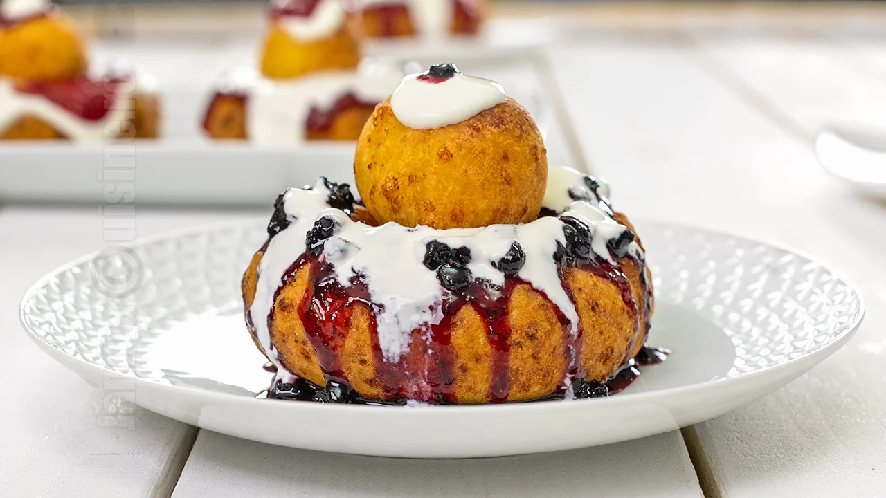

Papanași Recipe

Description
One of my favorites Romanian desert dishes made with sweet cheese, basically cheese doughnuts
Ingredients
- Cottage cheese
- Flour
- Cream cheese
- Jam
- Vanilla sugar
- Eggs
- Lemon zest
- Salt
Preparation
- Blend the cottage cheese
- Dough
- Form donuts
- Heat oil
- Fry
- Remove excess oil
- Serve